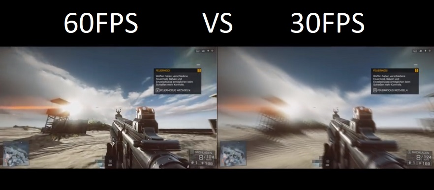

Un ordenador gaming también es buena idea para aquellos que quieran ser competitivos en juegos PvP. Para estos últimos lo más importante es tener buenos accesorios que permitan la rapidez al actuar y poder estar alerta de cualquier cosa que pase cerca de ellos. En Fornite, por ejemplo, es fundamental tener unos buenos cascos para escuchar el lugar exacto de las pisadas. Asimismo, un ratón con varios botones te puede ayudar mucho a la hora de construir. Pero no sólo en Fornite. En cualquier juego de habilidad, como el League of Legends o el Strarcraft, un buen teclado se puede apreciar mucho en los momentos clave. ¿Qué me dices de esa team fight en la que no acertaste tu habilidad especial por fallar al pulsar la tecla? Con un teclado y un ratón ergonómicos te será mucho más fácil manejarte en los juegos PvP. Respecto de los gráficos, los juegos en línea no suelen tener gráficos muy pesados, justamente para poder ser accesibles a la mayor cantidad de jugadores. Aun así, esto no quiere decir que no se necesiten requisitos altos, pero en mi opinión son más importantes los accesorios (un buen ratón, un buen teclado, etc.) que poder jugar con gráficos ultra al League of Legends.
